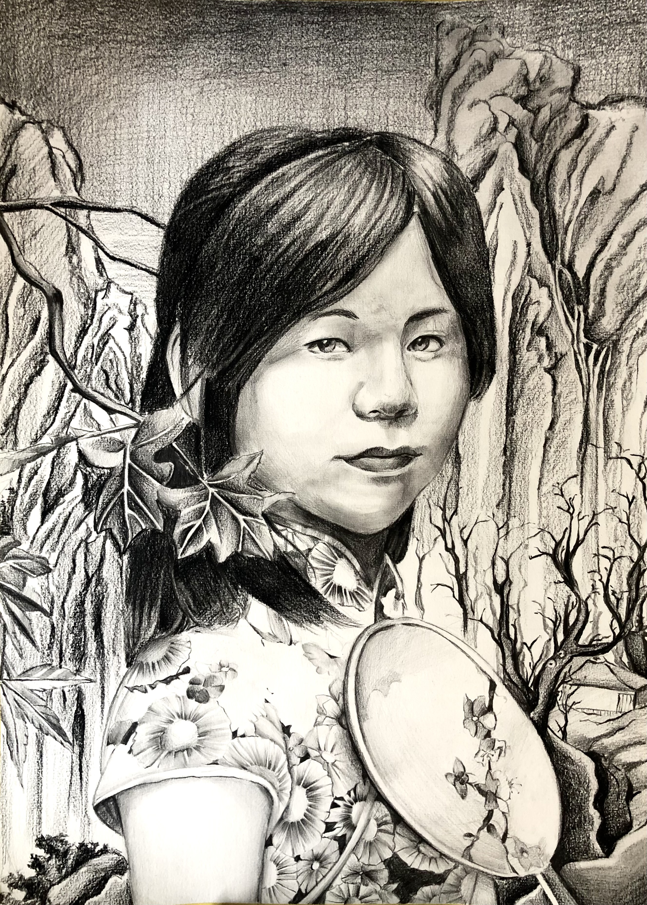
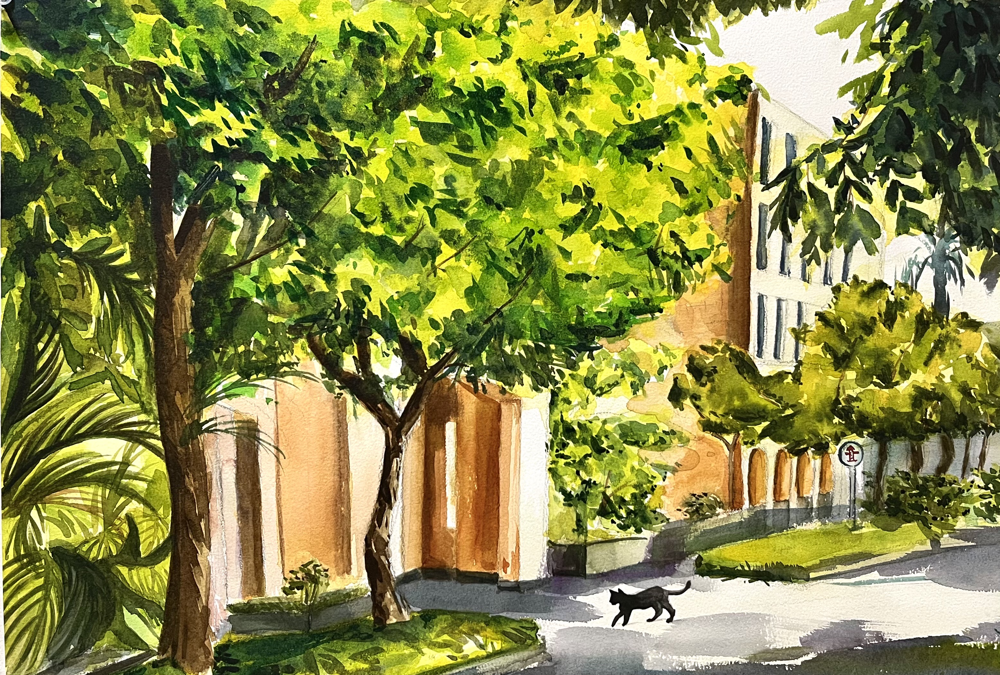
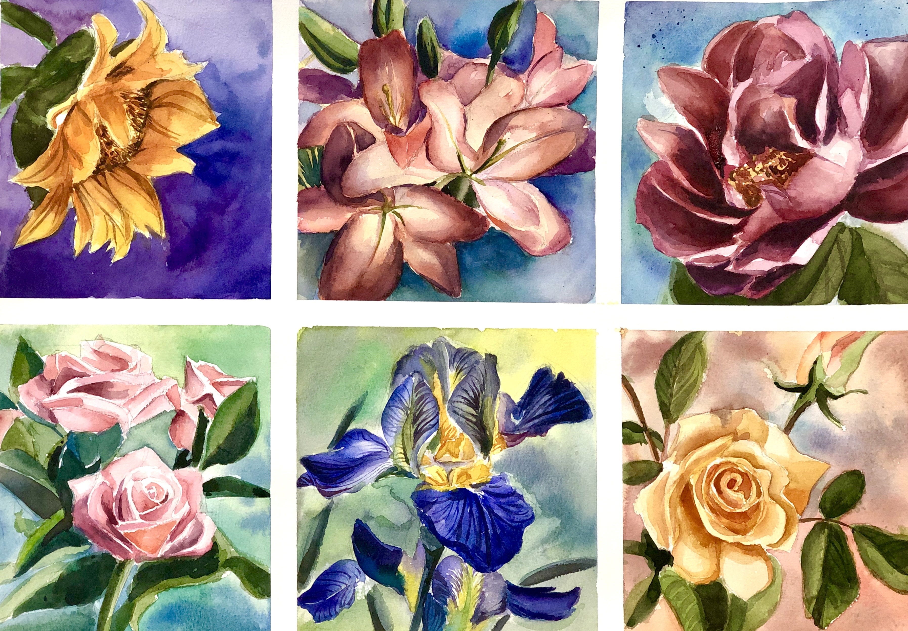

課堂作業 05 - 使用 Bootstrap 5 打造專業相簿展示頁面
展示個人作品的美麗相簿，每件作品都有詳細的描述與高質感的呈現方式。

自我映像 筆觸中的故事
我的素描自畫像，旨在以復古風格捕捉自我於時光中的映像。
葉下的探索 回到那童年時光
大自然的奇妙與童真的探索，透過這幅作品表達內心的平靜。
星空夢語
描繪一個坐在雲朵上的少女，象徵對夢想的守護與憧憬。
回家的路上
日常生活中匆忙的通勤場景，表達現代社會中的疏離感。

在那悠閒的午後
午後陽光灑在綠意盎然的街景中，營造寧靜祥和的氛圍。

綻放的靜謐
以花為主題，透過色彩與光影表現生命的柔和與力量。